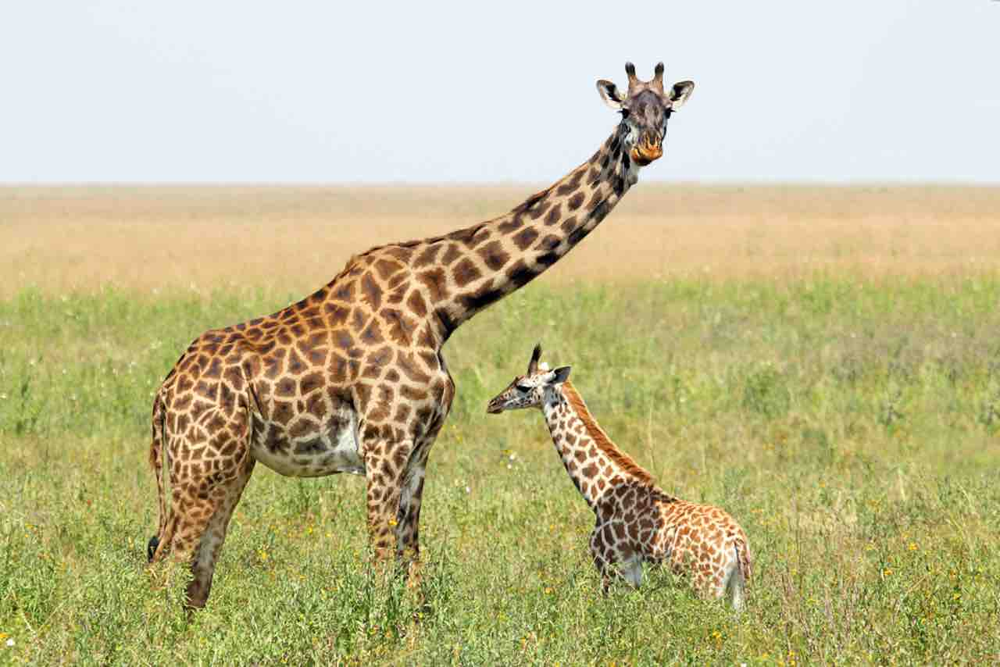
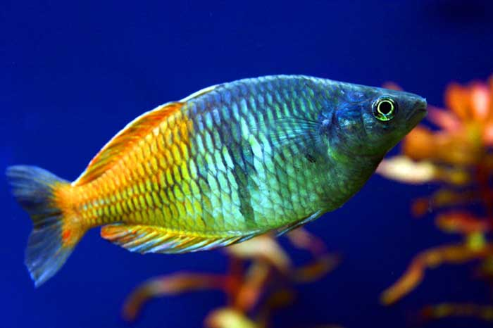
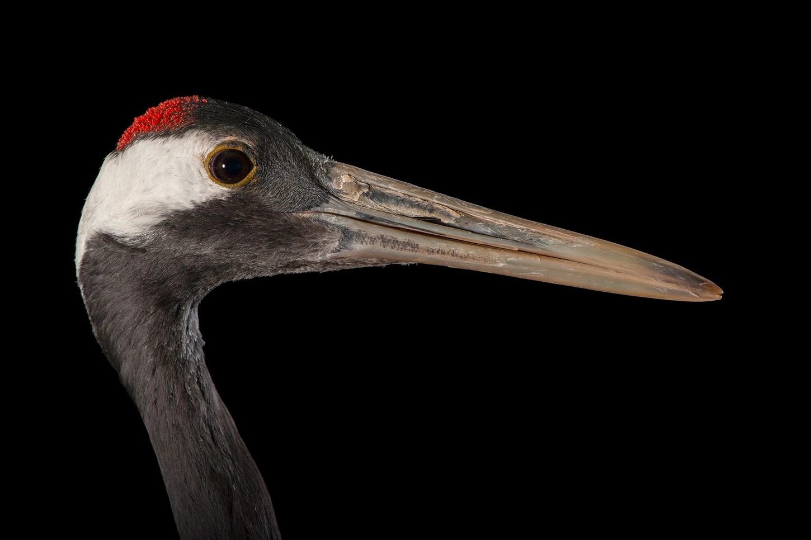

De nombreuses espèces animales sont aujourd'hui menacées d'extinction, avec plus de 15 000 espèces recensées comme menacées par l'UICN, dont certaines sont au bord de la disparition totale. Espèces emblématiques menacées Parmi les animaux les plus connus en danger critique d'extinction, on retrouve :

D'autres espèces menacées incluent des amphibiens, des coraux, des primates, des félins, des cétacés et des oiseaux rares, représentant un large éventail de la biodiversité mondialeCauses principales de la disparition Les menaces qui pèsent sur ces espèces sont multiples :

Efforts de conservation Des organisations comme le WWF et l'IFAW concentrent leurs efforts sur la protection d'espèces prioritaires et la préservation des habitats . Les mesures incluent :
Conclusion La situation des animaux en voie de disparition est critique, avec un tiers des espèces menacées à l'échelle mondiale. La protection de la biodiversité nécessite des actions concertées, tant au niveau local qu'international, et la participation active de chacun peut contribuer à préserver ces espèces pour les générations futures
cliquez pour plus d'information
Par exemple, malgré son statut de symbole de l'immortalité, la grue du Japon est en danger à cause du rétrécissement des zones humides qui composent son habitat. C'est la seconde espèce de grue la plus rare au monde.

Pour encore plus d'exemples cliquez iciAu jour d'aujourd'huit les 10 animaux les plus menacées selon les derniéres evaluations de l'UICN sont: